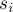
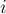

MAXimal
добавлено: 26 Mar 2012 1:00
редактировано: 26 Mar 2012 1:00
Содержание [скрыть]
Код Прюфера. Формула Кэли. Количество способов сделать граф связным
В данной статье мы рассмотрим так называемый код Прюфера, который представляет из себя способ однозначного кодирования помеченного дерева с помощью последовательности чисел.
С помощью кодов Прюфера демонстрируется доказательство формулы Кэли (задающей количество остовных деревьев в полном графе), а также решение задачи о количестве способов добавить в заданный граф рёбра, чтобы превратить его в связный.
Примечание. Мы не будем рассматривать деревья, состоящие из единственной вершины, — это особый случай, на котором многие утверждения вырождаются.
Код Прюфера
Код Прюфера — это способ взаимно однозначного кодирования помеченных деревьев с  вершинами с помощью последовательности
вершинами с помощью последовательности  целых чисел в отрезке
целых чисел в отрезке ![[1;n]](../tex2png/cache/526eecfe9426198c72ecda20833889a2.png) . Иными словами, код Прюфера — это биекция между всеми остовными деревьями полного графа и числовыми последовательностями.
. Иными словами, код Прюфера — это биекция между всеми остовными деревьями полного графа и числовыми последовательностями.
Хотя использовать код Прюфера для хранения и оперирования с деревьями нецелесообразно из-за специфичности представления, коды Прюфера находят применения в решении комбинаторных задач.
Автор — Хейнц Прюфер (Heinz Prüfer) — предложил этот код в 1918 г. как доказательство формулы Кэли (см. ниже).
Построение кода Прюфера для данного дерева
Код Прюфера строится следующим образом. Будем раза проделывать процедуру: выбираем лист дерева с наименьшим номером, удаляем его из дерева, и добавляем к коду Прюфера номер вершины, которая была связана с этим листом. В конце концов в дереве останется только  вершины, и алгоритм на этом завершается (номер этих вершин явным образом в коде не записываются).
вершины, и алгоритм на этом завершается (номер этих вершин явным образом в коде не записываются).
Таким образом, код Прюфера для заданного дерева — это последовательность из чисел, где каждое число — номер вершины, связанной с наименьшим на тот момент листом — т.е. это число в отрезке .
Алгоритм вычисления кода Прюфера легко реализовать с асимптотикой  , просто поддерживая структуру данных для извлечения минимума (например, "> или "> в языке C++), содержащую в себе список всех текущих листьев:
, просто поддерживая структуру данных для извлечения минимума (например, "> или "> в языке C++), содержащую в себе список всех текущих листьев:
const int MAXN = ...; int n; vector<int> g[MAXN]; int degree[MAXN]; bool killed[MAXN]; vector<int> prufer_code() { set<int> leaves; for (int i=0; i<n; ++i) { degree[i] = (int) g[i].size(); if (degree[i] == 1) leaves.insert (i); killed[i] = false; } vector<int> result (n-2); for (int iter=0; iter<n-2; ++iter) { int leaf = *leaves.begin(); leaves.erase (leaves.begin()); killed[leaf] = true; int v; for (size_t i=0; i<g[leaf].size(); ++i) if (!killed[g[leaf][i]]) v = g[leaf][i]; result[iter] = v; if (--degree[v] == 1) leaves.insert (v); } return result; }
Впрочем, построение кода Прюфера можно реализовать и за линейное время, что описывается в следующем разделе.
Построение кода Прюфера для данного дерева за линейное время
Приведём здесь простой алгоритм, имеющий асимптотику  .
.
Суть алгоритма заключается в хранении движущегося указателя , который всегда будет продвигаться только в сторону увеличения номеров вершин.
На первый взгляд, такое невозможно, ведь в процессе построения кода Прюфера номера листьев могут как увеличиваться, так и уменьшаться. Однако легко заметить, что уменьшения происходят только в единственном случае: кода при удалении текущего листа его предок имеет меньший номер (этот предок станет минимальным листом и удалится из дерева на следующем же шаге кода Прюфера). Таким образом, случаи уменьшения можно обработать за время  , и ничего не мешает построению алгоритма с линейной асимптотикой:
, и ничего не мешает построению алгоритма с линейной асимптотикой:
const int MAXN = ...; int n; vector<int> g[MAXN]; int parent[MAXN], degree[MAXN]; void dfs (int v) { for (size_t i=0; i<g[v].size(); ++i) { int to = g[v][i]; if (to != parent[v]) { parent[to] = v; dfs (to); } } } vector<int> prufer_code() { parent[n-1] = -1; dfs (n-1); int ptr = -1; for (int i=0; i<n; ++i) { degree[i] = (int) g[i].size(); if (degree[i] == 1 && ptr == -1) ptr = i; } vector<int> result; int leaf = ptr; for (int iter=0; iter<n-2; ++iter) { int next = parent[leaf]; result.push_back (next); --degree[next]; if (degree[next] == 1 && next < ptr) leaf = next; else { ++ptr; while (ptr<n && degree[ptr] != 1) ++ptr; leaf = ptr; } } return result; }
Прокомментируем этот код. Основная функция здесь — , которая возвращает код Прюфера для дерева, заданного в глобальных переменных (количество вершин) и  (списки смежности, задающие граф). Вначале мы находим для каждой вершины её предка — т.е. того предка, которого эта вершина будет иметь в момент удаления из дерева (всё это мы можем найти заранее, пользуясь тем, что максимальная вершина
(списки смежности, задающие граф). Вначале мы находим для каждой вершины её предка — т.е. того предка, которого эта вершина будет иметь в момент удаления из дерева (всё это мы можем найти заранее, пользуясь тем, что максимальная вершина  никогда не удалится из дерева). Также мы находим для каждой вершины её степень . Переменная — это движущийся указатель ("кандидат" на минимальный лист), который изменяется всегда только в сторону увеличения. Переменная — это текущий лист с минимальным номером. Таким образом, каждая итерация кода Прюфера заключается в добавлении в ответ, а также проверке, не оказалось ли меньше текущего кандидата : если оказалось меньше, то мы просто присваиваем , а в противном случае — двигаем указатель до следующего листа.
никогда не удалится из дерева). Также мы находим для каждой вершины её степень . Переменная — это движущийся указатель ("кандидат" на минимальный лист), который изменяется всегда только в сторону увеличения. Переменная — это текущий лист с минимальным номером. Таким образом, каждая итерация кода Прюфера заключается в добавлении в ответ, а также проверке, не оказалось ли меньше текущего кандидата : если оказалось меньше, то мы просто присваиваем , а в противном случае — двигаем указатель до следующего листа.
Как легко видно по коду, асимптотика алгоритма действительно составляет : указатель претерпит лишь изменений, а все остальные части алгоритма очевидно работают за линейное время.
Некоторые свойства кодов Прюфера
- По окончании построения кода Прюфера в дереве останутся неудалёнными две вершины.
Одной из них точно будет вершина с максимальным номером —
, а вот про другую вершину ничего определённого сказать нельзя. - Каждая вершина встречается в коде Прюфера определённое число раз, равное её степени минус один.
Это легко понять, если заметить, что вершина удаляется из дерева в момент, когда её степень равна единице — т.е. к этому моменту все смежные с ней рёбра, кроме одного, были удалены. (Для двух оставшихся после построения кода вершин это утверждение тоже верно.)
Восстановление дерева по его коду Прюфера
Для восстановления дерева достаточно заметить из предыдущего пункта, что степени всех вершин в искомом дереве мы уже знаем (и можем посчитать и сохранить в некотором массиве ). Следовательно, мы можем найти все листья, и, соответственно, номер наименьшего листа — который был удалён на первом шаге. Этот лист был соединён с вершиной, номер которой записан в первой ячейке кода Прюфера.
Таким образом, мы нашли первое ребро, удалённое кодом Прюфера. Добавим это ребро в ответ, затем уменьшим степени у обоих концов ребра.
Будем повторять эту операцию, пока не просмотрим весь код Прюфера: искать минимальную вершину с , соединять её с очередной вершиной кода Прюфера, уменьшать у обоих концов.
В конце концов у нас останется только две вершины с — это те вершины, который алгоритм Прюфера оставил неудалёнными. Соединим их ребром.
Алгоритм завершён, искомое дерево построено.
Реализовать этот алгоритм легко за время : поддерживая в структуре данных для извлечения минимума (например, "> или "> в C++) номера всех вершин, имеющих  , и извлекая из него каждый раз минимум.
, и извлекая из него каждый раз минимум.
Приведём соответствующую реализацию (где функция возвращает список из рёбер искомого дерева):
vector < pair<int,int> > prufer_decode (const vector<int> & prufer_code) { int n = (int) prufer_code.size() + 2; vector<int> degree (n, 1); for (int i=0; i<n-2; ++i) ++degree[prufer_code[i]]; set<int> leaves; for (int i=0; i<n; ++i) if (degree[i] == 1) leaves.insert (i); vector < pair<int,int> > result; for (int i=0; i<n-2; ++i) { int leaf = *leaves.begin(); leaves.erase (leaves.begin()); int v = prufer_code[i]; result.push_back (make_pair (leaf, v)); if (--degree[v] == 1) leaves.insert (v); } result.push_back (make_pair (*leaves.begin(), *--leaves.end())); return result; }
Восстановление дерева по коду Прюфера за линейное время
Для получения алгоритма с линейной асимптотикой можно применить тот же самый приём, что применялся для получения линейного алгоритма вычисления кода Прюфера.
В самом деле, для нахождения листа с наименьшим номером необязательно заводить структуру данных для извлечения минимума. Вместо этого можно заметить, что, после того как мы находим и обрабатываем текущий лист, он добавляет в рассмотрение только одну новую вершину. Следовательно, мы можем обойтись одним движущимся указателем вместе с переменной, хранящей в себе текущий минимальный лист:
vector < pair<int,int> > prufer_decode_linear (const vector<int> & prufer_code) { int n = (int) prufer_code.size() + 2; vector<int> degree (n, 1); for (int i=0; i<n-2; ++i) ++degree[prufer_code[i]]; int ptr = 0; while (ptr < n && degree[ptr] != 1) ++ptr; int leaf = ptr; vector < pair<int,int> > result; for (int i=0; i<n-2; ++i) { int v = prufer_code[i]; result.push_back (make_pair (leaf, v)); --degree[leaf]; if (--degree[v] == 1 && v < ptr) leaf = v; else { ++ptr; while (ptr < n && degree[ptr] != 1) ++ptr; leaf = ptr; } } for (int v=0; v<n-1; ++v) if (degree[v] == 1) result.push_back (make_pair (v, n-1)); return result; }
Взаимная однозначность соответствия между деревьями и кодами Прюфера
С одной стороны, для каждого дерева существует ровно один код Прюфера, соответствующий ему (это следует из определения кода Прюфера).
С другой стороны, из корректности алгоритма восстановления дерева по коду Прюфера следует, что любому коду Прюфера (т.е. последовательности из чисел, где каждое число лежит в отрезке ) соответствует некоторое дерево.
Таким образом, все деревья и все коды Прюфера образуют взаимно однозначное соответствие.
Формула Кэли
Формула Кэли гласит, что количество остовных деревьев в полном помеченном графе из вершин равно:
Имеется много доказательств этой формулы, но доказательство с помощью кодов Прюфера наглядно и конструктивно.
В самом деле, любому набору из чисел из отрезка однозначно соответствует некоторое дерево из вершин. Всего различных кодов Прюфера . Поскольку в случае полного графа из вершин в качестве остова подходит любое дерево, то и количество остовных деревьев равно , что и требовалось доказать.
Количество способов сделать граф связным
Мощь кодов Прюфера заключается в том, что они позволяют получить более общую формулу, чем формулу Кэли.
Итак, дан граф из вершин и  рёбер; пусть
рёбер; пусть  — количество компонент связности в этом графе. Требуется найти число способов добавить
— количество компонент связности в этом графе. Требуется найти число способов добавить  ребро, чтобы граф стал связным (очевидно, ребро — минимально необходимое количество рёбер, чтобы сделать граф связным).
ребро, чтобы граф стал связным (очевидно, ребро — минимально необходимое количество рёбер, чтобы сделать граф связным).
Выведем готовую формулу для решения этой задачи.
Обозначим через размеры компонент связности этого графа. Поскольку добавлять рёбра внутри компонент связности запрещено, то получается, что задача очень похожа на поиск количества остовных деревьев в полном графе из вершин: но отличие здесь в том, что каждая вершина имеет свой "вес" : каждое ребро, смежное с -ой вершиной, умножает ответ на .
Таким образом, для подсчёта количества способов оказывается важным, какие степени имеют все вершин в остове. Для получения формулы для задачи надо просуммировать ответы по всем возможным степеням.
Пусть — степени вершин в остове. Сумма степеней вершин равна удвоенному количеству рёбер, поэтому:
Если -я вершина имеет степень  , то в код Прюфера она входит раз. Код Прюфера для дерева из вершин имеет длину
, то в код Прюфера она входит раз. Код Прюфера для дерева из вершин имеет длину  . Количество способов выбрать набор чисел, где число встречается ровно раз, равно мультиномиальному коэффициенту (по аналогии с биномиальным коэффициентом):
. Количество способов выбрать набор чисел, где число встречается ровно раз, равно мультиномиальному коэффициенту (по аналогии с биномиальным коэффициентом):
С учётом того, что каждое ребро, смежное с -ой вершиной, умножает ответ на , получаем, что ответ, при условии, что степени вершин равны , равен:
Для получения ответа на задачу надо просуммировать эту формулу по всевозможным допустимым наборам :
Для свёртывания этой формулы воспользуемся определением мультиномиального коэффициента:
Сравнивая эту формулу с предыдущей, получаем, что если ввести обозначение :
то после сворачивания ответ на задачу равен:
(Эта формула верна и при  , хотя формально из доказательства это не следовало.)
, хотя формально из доказательства это не следовало.)
Задачи в online judges
Задачи в online judges, в которых применяются коды Прюфера:
- UVA #10843 "Anne's game" [сложность: низкая]
- TIMUS #1069 "Код Прюфера" [сложность: низкая]
- CODEFORCES 110D "Улики" [сложность: средняя]
- TopCoder SRM 460 "TheCitiesAndRoadsDivTwo" [сложность: средняя]